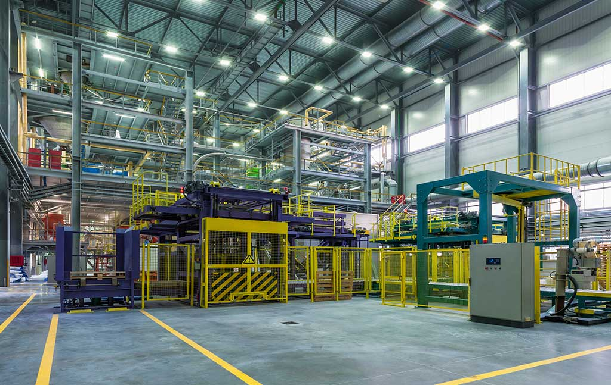

Bienvenido a Industria Eficiente, un portal educativo dedicado a presentar herramientas y estrategias de la Ingeniería Industrial que permiten mejorar los procesos de fabricación. A través de este sitio se explican conceptos relacionados con la producción, la calidad, la logística, el mantenimiento y la productividad, utilizando ejemplos aplicados a una empresa manufacturera de productos plásticos.
Una gestión eficiente de los procesos industriales permite aprovechar mejor las materias primas, reducir los desperdicios, prevenir defectos, disminuir los tiempos de producción y cumplir con las entregas programadas. El uso adecuado de estas herramientas facilita la toma de decisiones y contribuye a mejorar la competitividad, la rentabilidad y la satisfacción del cliente.
La Ingeniería Industrial integra diferentes áreas de conocimiento para mejorar el funcionamiento de las organizaciones. Explora las siguientes áreas y descubre cómo contribuyen a solucionar problemas de una empresa manufacturera.
Permite organizar las órdenes de trabajo, los recursos, los materiales y los tiempos de fabricación para cumplir con la demanda y las fechas de entrega. Una planificación adecuada ayuda a reducir los retrasos y los tiempos muertos.
Conocer más sobre producciónBusca garantizar que los productos cumplan las especificaciones técnicas establecidas. Mediante inspecciones, herramientas estadísticas y acciones preventivas, se pueden identificar las causas de los defectos y evitar que se repitan.
Conocer más sobre calidadSe encarga de administrar el almacenamiento y el movimiento de materiales desde su recepción hasta la entrega del producto terminado. Una gestión adecuada de los inventarios ayuda a evitar faltantes, acumulaciones innecesarias y costos adicionales.
Conocer más sobre logísticaEs una filosofía de gestión que busca aumentar el valor para el cliente mediante la eliminación de actividades que consumen recursos sin aportar valor. Herramientas como las 5S y Kaizen permiten mejorar la organización, reducir desperdicios y optimizar los procesos.
Conocer más sobre Lean ManufacturingComprende las actividades destinadas a conservar los equipos en condiciones adecuadas de funcionamiento. El mantenimiento preventivo y predictivo permite anticipar fallas, mientras que el correctivo busca restablecer el funcionamiento después de una avería.
Conocer más sobre mantenimientoPermite evaluar el aprovechamiento de los recursos y los resultados de una operación mediante indicadores clave de desempeño (KPI). Mediciones como la tasa de defectos, el tiempo de ciclo y el OEE ayudan a identificar oportunidades de mejora y respaldar decisiones.
Conocer más sobre productividad